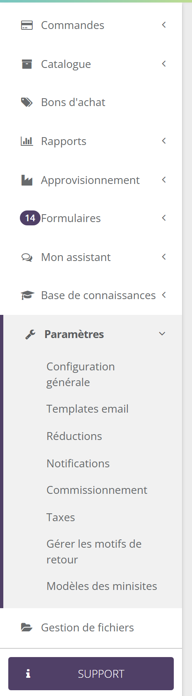
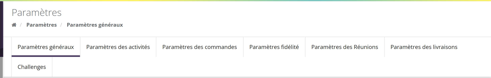
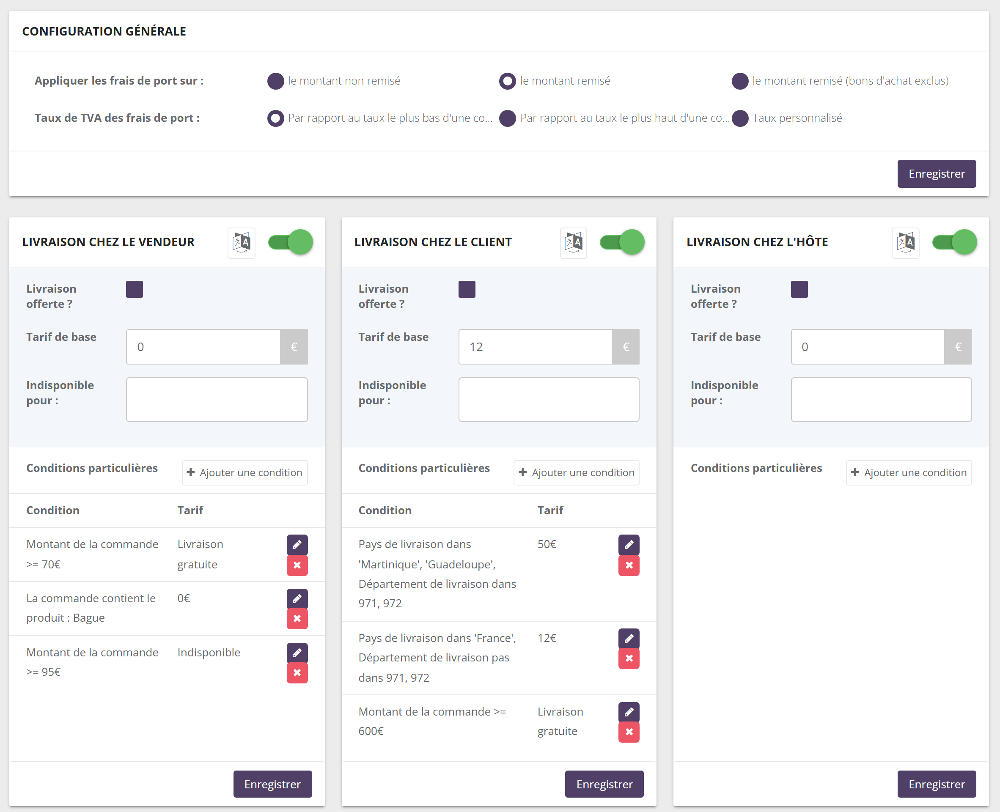
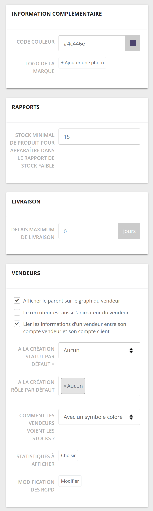

Avant de commencer
Une nouvelle marque se paramètre presque entièrement depuis le menu Paramètres de l'espace marque. L'ordre compte : certains réglages s'appuient sur d'autres (un produit a besoin d'une taxe, un statut par défaut a besoin de statuts existants…).

L'essentiel se trouve dans Paramètres › Configuration générale, organisée en onglets : Paramètres généraux, Paramètres des activités, Paramètres des commandes, Paramètres fidélité, Paramètres des Réunions, Paramètres des livraisons, et selon vos options Challenges et Paramètres des collections.
Les autres réglages sont dans les menus métier : Catalogue, Vendeurs, Formulaires, Base de connaissances.
Certaines fonctions ne sont visibles que si SellingAtHome les a activées pour votre marque. Les étapes concernées portent le badge Module optionnel. Voir Modules et options.

Dans l'espace marque, les conseillères sont appelées vendeurs (ou VDI), l'hôtesse hôte et le recruteur parrain. Cette page parle de conseillères, d'hôtesses et de recruteuses, mais cite les libellés exactement comme à l'écran.
Chaque onglet a ses propres boutons Enregistrer ou Enregistrer les paramètres, souvent un par bloc. Un réglage modifié dans un bloc n'est pas enregistré par le bouton d'un autre bloc.
La check-list
Cochez chaque étape une fois terminée. Vos coches sont mémorisées par votre navigateur, sur cet ordinateur.
- 1Identité et coordonnées de la marqueNom, adresse, contacts, banque, couleur, logo.
- 2TaxesLes taux de TVA, avant de créer les produits.
- 3CatalogueCatégories, attributs, puis produits et prix.
- 4LivraisonModes de livraison, tarifs et conditions de gratuité.
- 5Paramètres des commandesChamps obligatoires, annulation, suppression automatique, questions.
- 6RéunionsDélai de clôture, verrous, mini-sites.
- 7Fidélité et offresGains des hôtesses et clientes, bons d'achat, réductions.
- 8Statuts et rôles des conseillèresLa grille des statuts et les profils de droits.
- 9Plan de rémunérationLes règles de commissionnement.
- 10Réglages des conseillèresStatut et rôle par défaut, stocks visibles, statistiques.
- 11RecrutementFormulaire de candidature, contenus, kit de démarrage.
- 12Emails, contenus et activitésTemplates email, base de connaissances, types d'activités.
Les fondations
3.1 Étape 1 — Identité et coordonnées
- Pourquoi
- Ces informations apparaissent sur vos documents et vos emails : l'adresse sert aux bons de commande, l'adresse email est celle d'envoi des emails automatiques, l'IBAN et le BIC sont le compte émetteur du fichier de virement SEPA des commissions.
- Où
- ParamètresConfiguration généraleOnglet Paramètres généraux
- À décider
- Informations générales : Nom, Description, Numéro de Siret, Numéro de TVA.
- Adresse (pour les bons de commandes).
- Contacts : Adresse email d'envoi des emails automatiques, Téléphone de contact pour les utilisateurs, URL ou Email de contact pour les vendeurs.
- Informations bancaires : nom de la banque, RIB (facultatif), IBAN, SWIFT / BIC.
- Information complémentaire : Code couleur et Logo de la marque.
- Rapports : le stock minimal en dessous duquel un produit apparaît dans le rapport de stock faible (5 par défaut).
- Livraison : Délais maximum de livraison, en jours.
- Pièges
- Sans IBAN ni BIC, le fichier de virement SEPA des commissions ne peut pas indiquer votre compte.
- Délais maximum de livraison : à 0 (valeur par défaut), aucune date limite de livraison n'est imprimée. Au-delà, vos bons de commande, factures et bons de livraison indiquent une date limite égale à la date de paiement plus ce nombre de jours. 13 marques sur 35 l'utilisent.
- Le bloc Vendeurs de la même page se règle plus tard, à l'étape 10 : il a besoin des statuts et des rôles.
- Plus loin
- Découvrir l'espace marque
3.2 Étape 2 — Les taxes
- Pourquoi
- Chaque prix de produit est rattaché à une taxe. Créez donc vos taux de TVA avant votre catalogue.
- Où
- ParamètresTaxes
- À décider
- Ajouter une taxe : un nom, un taux, un pays et un ordre d'affichage. Par exemple « TVA 20 % » et « TVA 5,5 % » pour la France.
- Ajouter une zone (facultatif) : une zone de taxes regroupe plusieurs taxes (« Taxes associées »). Utile seulement si vous vendez dans plusieurs pays ; une seule marque sur 35 en utilise.
- Pièges
- Le taux de TVA des frais de port se déduit des taux présents dans la commande (réglage de l'étape 4) : des taxes bien définies évitent les surprises sur les frais de port.
- Plus loin
- Catalogue et logistique
Vendre
4.1 Étape 3 — Le catalogue
- Pourquoi
- Sans produits, ni commande ni réunion possible. C'est aussi l'étape la plus longue : commencez-la tôt.
- Où
- CatalogueCatégories, Attributs, Produits
- À décider
- L'arborescence des catégories, telle que les conseillères la verront.
- Les attributs (caractéristiques comme une taille ou une couleur), avant les produits qui en ont besoin.
- Les produits, avec leurs prix et leur taxe.
- Pièges
- Créez les catégories et les attributs d'abord : un produit se range dans des catégories qui doivent exister.
- Plus loin
- Catalogue et logistique
4.2 Étape 4 — La livraison
- Pourquoi
- Les frais de port s'ajoutent à chaque commande. Un mode de livraison oublié, ou mal tarifé, se voit immédiatement chez vos clientes.
- Où
- ParamètresConfiguration généraleOnglet Paramètres des livraisons
- À décider
- Appliquer les frais de port sur : le montant non remisé (par défaut), le montant remisé, ou le montant remisé (bons d'achat exclus). Compte pour les conditions de gratuité.
- Taux de TVA des frais de port : par rapport au taux le plus bas d'une commande (par défaut), au taux le plus haut, ou un taux personnalisé.
- Pour chaque mode de livraison (chez la conseillère, chez la cliente, chez l'hôtesse, adresse personnalisée, points relais selon votre contrat…) : l'activer ou non, Livraison offerte ?, Tarif de base, Indisponible pour (types de commande) et les Conditions particulières.
- Pièges
- Chaque carte de mode de livraison a son propre bouton Enregistrer.
- Un taux personnalisé ne peut pas être de 0 %.
- Plus loin
- Catalogue et logistique

Votre marque livre chez la cliente pour un tarif de base de 6,90 €, avec une condition particulière « Montant de la commande >= 80 € » → livraison gratuite. Camille commande 65 € : elle paie 6,90 € de port. Inès commande 92 € : la livraison est offerte. Si vous appliquez les frais de port sur le montant remisé et qu'Inès bénéficie d'une réduction de 15 €, sa commande descend à 77 € et elle paie le port.
Repère : 17 marques sur 35 appliquent les frais de port sur le montant non remisé, 18 sur un montant remisé. 24 marques sur 35 gardent le taux de TVA le plus bas de la commande.
4.3 Étape 5 — Les paramètres des commandes
- Pourquoi
- Ces réglages décident de ce qui est obligatoire pour commander, de ce qui se passe à l'annulation, et du sort des paniers jamais payés.
- Où
- ParamètresConfiguration généraleOnglet Paramètres des commandes
- À décider
- Rendre l'adresse obligatoire et Rendre le téléphone obligatoire pour passer une commande.
- Autoriser la suppression automatique des commandes non payées, avec un Délai de suppression en heures (48 heures minimum).
- Le réapprovisionnement du stock en cas d'annulation ou de suppression d'une commande, et le recrédit des points de fidélité sur les commandes annulées.
- L'envoi d'une copie de la facture client par email (à vous, ou à la conseillère).
- Paramètres des questions : des questions posées lors de la finalisation de la commande (par exemple « Êtes-vous intéressée par le métier de conseillère ? »), dont vous suivez les réponses dans Rapports › Réponses aux questions, obligatoires ou non.
- Ajout automatique d'éléments dans la commande (un cadeau offert selon des conditions) et Produits suggérés.
- Pièges
- La suppression automatique efface les commandes non payées créées depuis plus longtemps que le délai (hors kits de démarrage et commandes payées en partie). Une cliente qui comptait payer plus tard perd son panier.
- Certaines cases n'apparaissent que si l'option correspondante est activée pour votre marque (livraison partielle, bons de préparation, modèle de bon de livraison personnalisé).
- Plus loin
- Comprendre les commandes · Commandes et boutiques
Animer
5.1 Étape 6 — Les réunions
- Pourquoi
- La réunion est le cœur de la vente à domicile. Ses réglages décident quand elle se clôture et ce que la conseillère peut encore modifier ensuite.
- Où
- ParamètresConfiguration généraleOnglet Paramètres des Réunions
- À décider
- Le délai de clôture en heures (48 par défaut, minimum 48). 13 marques sur 35 gardent 48 h, 10 choisissent 96 h.
- Annuler les réunions sans commande, et supprimer les commandes non payées, à la clôture.
- Les actions bloquées lorsque la réunion est terminée.
- Le mode de création des mini-sites, si votre marque a cette option.
- Pièges
- Accordez ce délai avec la suppression automatique des commandes de l'étape 5 : les deux mécanismes peuvent supprimer des paniers non payés.
- Plus loin
- Le cycle de vie d'une réunion › Les réglages
5.2 Étape 7 — Fidélité et offres
- Pourquoi
- Les gains des hôtesses sont l'argument qui fait organiser des réunions. Les bons d'achat et les réductions animent vos ventes.
- Où
-
ParamètresConfiguration généraleOnglet Paramètres fidélitéBons d'achatParamètresRéductions
- À décider
- Ce que gagnent l'hôtesse, la cliente et la conseillère (onglets Hôte, Client, Vendeur du bloc « Paramétrage par type »).
- Ce qui compte dans le chiffre d'affaires de la réunion (achats de l'hôtesse, montant payé en points…).
- Vos premiers modèles de bons d'achat et vos premières réductions.
- Pièges
- Testez vos règles sur un exemple chiffré avant l'ouverture : une règle trop généreuse se corrige mal une fois les gains distribués.
- Plus loin
- Guide de la fidélité · Guide des bons d'achat · Guide des réductions
Le réseau
6.1 Étape 8 — Statuts et rôles des conseillères
- Pourquoi
- Les statuts (par exemple Conseillère, Animatrice, Manager) structurent votre réseau et servent de base au plan de rémunération. Les rôles définissent ce que chaque conseillère peut faire.
- Où
-
VendeursGérer les statutsVendeursGérer les rôles
- À décider
- La grille des statuts (bouton Nouveau statut).
- Si vous disposez de l'option, les règles de passage automatique (bouton Automatisation des statuts).
- Les profils de droits (bouton Ajouter un rôle).
- Pièges
- Les statuts doivent exister avant d'être choisis comme statut par défaut (étape 10) et utilisés dans le plan de rémunération (étape 9).
- Plus loin
- Réseau et rémunération
Repère : 32 marques sur 35 ont une grille de statuts, 27 ont créé des rôles de conseillères.
6.2 Étape 9 — Le plan de rémunération Module optionnel
- Pourquoi
- Il calcule les commissions de vos conseillères chaque mois. C'est le réglage le plus engageant : il doit être juste dès la première clôture.
- Où
- ParamètresCommissionnement
- À décider
- Les règles, leurs valeurs par statut et leurs conditions.
- Pièges
- Validez le plan sur quelques cas réels (une conseillère débutante, une animatrice avec une équipe) avant la première clôture mensuelle.
- Plus loin
- Réseau et rémunération
Repère : le menu Commissionnement est activé pour 31 marques sur 35.
6.3 Étape 10 — Les réglages des conseillères

- Pourquoi
- Le statut et le rôle par défaut sont donnés à chaque conseillère créée depuis l'espace marque ou par le recrutement ; les autres choix règlent ce que les conseillères voient dans leur espace.
- Où
- ParamètresConfiguration généraleParamètres générauxBloc Vendeurs
- À décider
- A la création statut par défaut et rôle par défaut.
- Le recruteur est aussi l'animateur du vendeur.
- Lier les informations d'un vendeur entre son compte vendeur et son compte client.
- Comment les vendeurs voient les stocks ? : Aucun, Avec un symbole coloré, Avec le chiffre exact.
- Statistiques à afficher dans le tableau de bord des conseillères.
- Pièges
- Sans statut par défaut (« Aucun »), une nouvelle conseillère n'a pas de statut tant que vous ne le lui donnez pas.
Le bloc Gestion des cotisations sociales de la même page (Pas de déduction automatique, Déduction automatique à la fin du trimestre, Lissage au mois) ne concerne que les marques qui gèrent le précompte des cotisations : voir Réseau et rémunération.
6.4 Étape 11 — Le recrutement Module optionnel
- Pourquoi
- Le recrutement dématérialisé transforme une candidate en conseillère : formulaire, documents, contrat, compte créé, kit de démarrage.
- Où
- FormulairesRecrutementsOnglet Configuration
- À décider
- Les cinq onglets de la configuration : Configuration générale (validation automatique des demandes, création automatique du vendeur, gestion automatisée du parrain et de l'animateur…), Formulaires, Contenus, Demandes et Kit de démarrage.
- Pièges
- La création automatique d'une conseillère lui attribue le statut et le rôle par défaut de l'étape 10 : faites l'étape 10 avant d'ouvrir le recrutement.
- Plus loin
- Le recrutement
Communiquer
7.1 Étape 12 — Emails, contenus et activités
- Pourquoi
- Les emails automatiques partent dès la première commande, à vos couleurs et avec vos mots. Les contenus accompagnent vos conseillères.
- Où
-
ParamètresTemplates emailBase de connaissancesDocuments, FAQ, FormationsParamètresConfiguration généraleOnglet Paramètres des activités
- À décider
- Le texte de vos emails, l'en-tête et le bas de page (boutons Configurer l’entête et Configurer le bas de page).
- Les premiers documents, questions fréquentes et formations pour les conseillères.
- Les types d'activités proposés dans l'agenda des conseillères (bouton Nouveau type), par exemple « Formation à la vente ».
- Selon vos options : vos challenges (onglet Challenges) et vos modèles de mini-sites (Paramètres › Modèles des minisites).
- Plus loin
- Communication et pilotage · Guide des challenges · Les réunions
7.2 Le test final
Avant d'ouvrir à tout le réseau, déroulez un parcours complet avec une conseillère pilote, par exemple Léa :
Vérifiez le mini-site s'il est activé, et les thèmes si vous les imposez.
Contrôlez les prix TTC, les frais de port selon le montant, les questions de fin de commande, les champs obligatoires.
Contrôlez l'email reçu par la cliente, la facture, et les gains de Jade.
Vérifiez les verrous et le chiffre d'affaires de la réunion.
Si vous avez le plan de rémunération, contrôlez la commission calculée pour Léa et pour sa recruteuse.
Les valeurs par défaut à connaître
Ce que vous trouvez en arrivant, et ce que font réellement les marques. Un réglage par défaut n'est pas forcément le bon choix pour vous.
| Réglage (onglet) | Ce que font les marques | Par défaut |
|---|---|---|
| Stock minimal… rapport de stock faible (Paramètres généraux) | 21 marques sur 35 gardent 5. | 5 |
| Délais maximum de livraison (Paramètres généraux) | 13 marques sur 35 indiquent un délai, de 1 à 30 jours. | 0 (aucun) |
| Le recruteur est aussi l'animateur du vendeur (Paramètres généraux) | 19 marques sur 35 le décochent pour distinguer les deux. | Coché |
| Lier les informations d'un vendeur entre son compte vendeur et son compte client (Paramètres généraux) | 26 marques sur 35 le cochent. | Non coché |
| A la création statut par défaut (Paramètres généraux) | 13 marques sur 35 en choisissent un. | Aucun |
| Comment les vendeurs voient les stocks ? (Paramètres généraux) | 17 marques sur 35 montrent le chiffre exact, les autres un symbole coloré ou rien. | Aucun |
| Rendre le téléphone obligatoire pour passer une commande (Paramètres des commandes) | 17 marques sur 35. | Non |
| Rendre l'adresse obligatoire pour passer une commande (Paramètres des commandes) | 35 marques sur 35. | Oui |
| Autoriser la suppression automatique (Paramètres des commandes) | 19 marques sur 35, le plus souvent avec 48 heures. | Non |
| Réapprovisionnement des produits en cas d'annulation (Paramètres des commandes) | 30 marques sur 35. | Oui |
| Recrédit des points de fidélité sur les commandes annulées (Paramètres des commandes) | 6 marques sur 35. | Non |
| Activer les commentaires client ? (Paramètres des commandes) | 34 marques sur 35. | Oui |
| Appliquer les frais de port sur (Paramètres des livraisons) | 17 marques sur 35 gardent le montant non remisé. | Montant non remisé |
| Délai de clôture des réunions (Paramètres des Réunions) | 13 marques sur 35 gardent 48 h, 10 choisissent 96 h. | 48 h |
Valeurs observées sur les 35 marques actives (au moins une commande payée sur les 12 derniers mois).
Points d'attention
- L'ordre compte : taxes avant produits, statuts avant statut par défaut et plan de rémunération, réglages des conseillères avant l'ouverture du recrutement.
- Un bouton Enregistrer par bloc : enregistrez chaque bloc avant de passer au suivant.
- Deux mécanismes suppriment des paniers non payés : la suppression automatique des commandes (étape 5) et la suppression à la clôture des réunions (étape 6). Choisissez des délais compatibles avec les habitudes de paiement de vos clientes.
- Les coordonnées bancaires sont indispensables au fichier de virement SEPA des commissions.
- Un menu absent n'est pas un oubli de votre part : la fonction n'est peut-être pas activée pour votre marque (Modules et options).
Questions fréquentes
Je ne trouve pas le menu Commissionnement (ou Recrutements, ou l'onglet Challenges).
Ces fonctions s'activent sur demande. Si le menu n'apparaît pas, adressez-vous à votre interlocuteur SellingAtHome. La liste complète est dans Modules et options.
Je ne vois pas la case « Utiliser un bon de préparation » (ou « Autoriser la Livraison partielle de commande »).
Ces cases ne s'affichent que si l'option correspondante est activée pour votre marque par SellingAtHome.
Puis-je changer ces réglages après l'ouverture ?
Oui, ils restent modifiables. Mais certains ont des effets immédiats sur le réseau (frais de port, délais de clôture, suppression automatique) : prévenez vos conseillères avant de les changer.
Mes coches de la check-list ont disparu.
Elles sont mémorisées par votre navigateur, sur l'ordinateur utilisé. Sur un autre ordinateur, ou après avoir effacé les données de navigation, la check-list repart de zéro. Vos paramètres, eux, ne sont pas concernés.